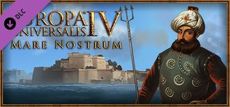

|  | |
| 概述 | |
| 類型 | 擴展包 |
| 發行日期 / 修補程式 | 2016-04-05 / 1.16 |
| 商店：擴展包 | Paradox /Steam |
| 商店：兵模包 | Paradox / Steam |
- 本文講述的是名為「我們的海」的擴展包，關於其它意義請移步至我們的海（消歧義）。
我們的海（Mare Nostrum）是歐陸風雲4的第八個DLC。它在2016年3月1日[1]官宣，並在同年4月5日[2]放出。它與1.16版本[3]同時。
擴展包特性
- 柏柏爾國家能夠用海軍劫掠海岸。
- 間諜行動·盜取地圖：以卑鄙小人的偷竊行為發現受害者在某個地區已經發現的所有省份。
- 新的海軍任務·尋獵：選定的艦隊會在指定區域巡邏並攻擊敵方艦隊。
- 新的海軍任務·避戰：選定的艦隊會避開指定區域的敵方艦隊。
- 新的海軍任務·封鎖：選定的艦隊會在指定區域封鎖敵方的港口。
- 新的海軍任務·攔截：選定的艦隊會在友方海岸線附近攻擊正在卸載敵軍部隊的運輸艦隊。指定區域封鎖敵方的港口。
- 新的外交選項·無條件投降：敵人獲得一份100戰爭分的合約，如果他們兩個月之內不接受，那麼呼籲和平的效果將會變成原來的二倍。
- 對一個國家進行間諜行為時你將會獲得對該國家額外的圍城能力以及他對你的ae獲取減少。
- 三個新的間諜行動：誹謗商人團，5年內減少目標國家的貿易力量；破壞徵兵，5年內減少目標國家水手和人力的補充速度；腐化官員，增加目標國家的腐敗度。
- 海軍任務·獵殺海盜（dlc黃金國也可解鎖）。
- 新的海軍指令面板：通過對一系列參數的設定，決定你的艦隊在執行海軍任務時面對不同狀況的行為。
- 外交行動·出租遣外僱傭兵團：你現在可以向他國出租自己的常備軍作為僱傭兵團並獲取和戰爭貢獻成比例的收入。
- 占領沿海省份現在可以自動獲取水手。
- 「回港修理」現被替換成「脫離艦隊並修理」，艦隊中受損的艦船會入港修理，並在完全修復後重新加入原來的艦隊。
- 外交官行動·反間諜行動：現在可以派遣外交官對某國進行反間諜行動，為發現敵國製造間諜網增加100%的可能性。
- 允許船隻在補給範圍內更換海軍將領。
- 鼓勵重商主義：花費外交點數來提升本國的重商主義。
- 增加了時間線模式，觀察整場遊戲內世界的變化變得更加方便。
- 貿易聯盟的領袖可以釋放自己的一個省份作為貿易城市，被釋放的貿易城市是貿易市政府形態並會自動加入釋放者的貿易聯盟。（在 patch 1.18版本中更新）
免費特性
- 主要是修改間諜活動。現在有了一種新的「建立間諜網」的持續行動，即你的外交官在另一個國家秘密建立間諜網，而不是派遣外交官進行持續的間諜行動。間諜網絡的大小為0-100，而非建立間諜網的間諜行動現在是即時行動，使用時會消耗一定數量的間諜網點數，但保證成功（例如，挑動不滿情緒行動會將「不滿情緒播種」修正應用於目標國家5年）。間諜進攻修正改為間諜網建設修正，並決定間諜網建設的速度，而外國間諜監測則決定了當另一個國家在你的國家建設間諜網絡並干擾他們的努力時，被發現的機會。
- 現在就算附庸和他的未擁有核心省份不相鄰，你也能將該省份給他了。
- 新增了劫掠地圖.
- 竊取科技不再是一項間諜行動，而是在另一個科技更先進的國家建立間諜網所獲得的科技花費折扣。間諜網規模大小和目標國家領先於你多少科技等級將決定折扣大小, 使用的每種科技類別只有最大的折扣（因此，如果你從一個國家獲得20%的土地技術折扣，從另一個國家獲得15%，你的實際折扣是20%）。
- 海戰：根據海軍上將的機動技能，現在有機會俘獲不會被擊沉的船隻。（除了戰鬥後俘獲的士氣低落的戰艦之外。）
- 海戰：現在損失一艘船就會讓整個船隊的士氣降低。
- 海戰：現在位置概念被移除
- 海戰：引入「戰爭寬度」，即每回合能與敵人交戰的艦艇數量。這取決於領導者機動技能和局部/全局修正。
- 新地圖模式：直屬州和自治領地地圖
- 添加了歷史上的「中立」標籤，使國家不太可能成為朋友或敵人。
- 殖民貿易公司省份不再改變該省份的宗教和文化
- 將領現在有攻城能力，每點增加10%的圍城效率。
- 航海理念：商船護航現在給予+50%的全國水手修正和海軍理念：強征入伍現在給予+25%的水手恢復。
- 增加了水手機制，這取決於港口的發展。水手會在造船和修船時被使用。
- 添加了繼續按鈕，以結束正常遊戲劇本，允許您超過正常的結束日期（1821.01.01），如果不玩鐵人模式。
- 貿易節點被壟斷的程度（由最大的貿易份額決定）現在加起來等於私掠船貿易額修正的100%。
- 省份提示現在顯示更多關於封鎖艦隊的信息。
- 封鎖現在用特殊的邊界圖形顯示在地圖上。
- 新增了一個「直屬州和自治領地」的機制，在這個機制中，國家會給予非海外領土極大的好處，而自治領土擁有自治權，其中許多治下的自治領土將被視為海外領土。
- 此外，由於科技落後、過度擴張的影響，以及腐敗度支出減少的影響，腐敗度會隨之增加。
腐敗度會影響一個國家的最低自治度、從事間諜活動的能力和所有點數花費。
- 添加「腐敗」控制台指令來設置腐敗程度。
開發者日誌
移步此處來檢視開發者日誌列表。
參考資料
- ↑ Forum, The next Europa Universalis IV expansion: Mare Nostrum!, 01-03-2016
- ↑ https://twitter.com/E_Universalis/status/712642283926077440
- ↑ Forum, Patch 1.16 * FULL patchnotes, 04-04-2016